Presented here is an advertising campaign I created
to promote the support of healthy, locally grown foods.
The posters are designed to remsemble maps "leading"
the viewer to the benefits of their support.
The Ideation
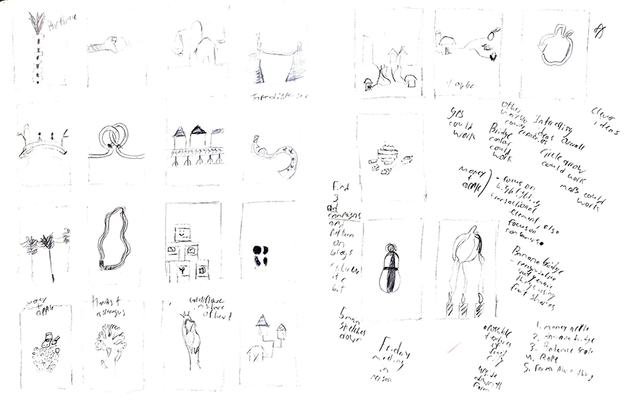 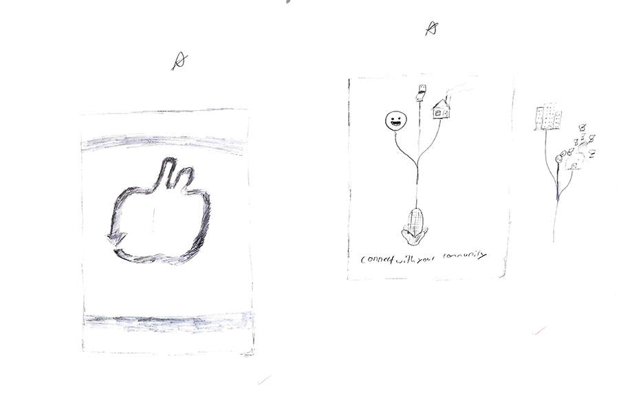 For this project, I drew out 20 sketches based on keywords
formulated from the project proposal and research. Of these
sketches, only 4 would become refined sketches. Two of
these refined sketches are shown here. The concept generated
from the sketches was a focus on maps.
The Right Foot In The Door
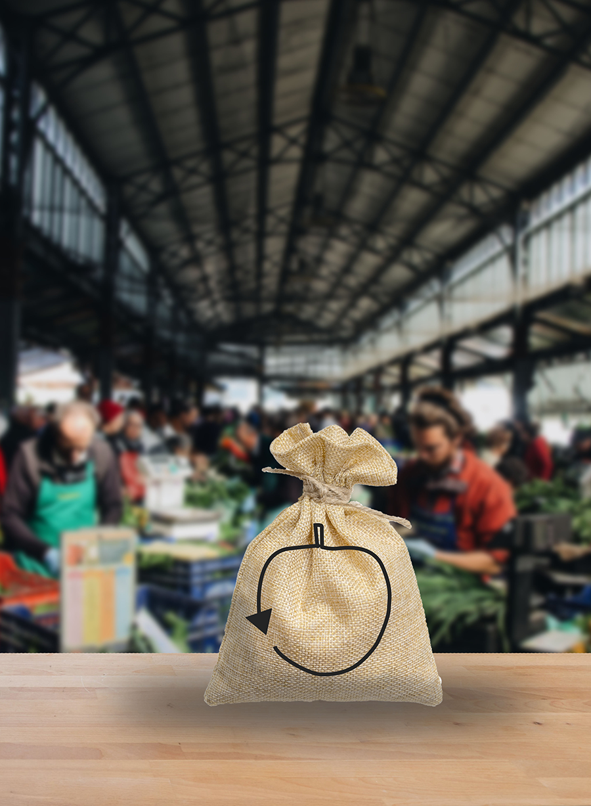 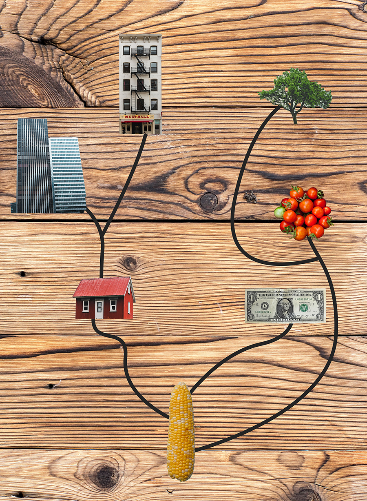 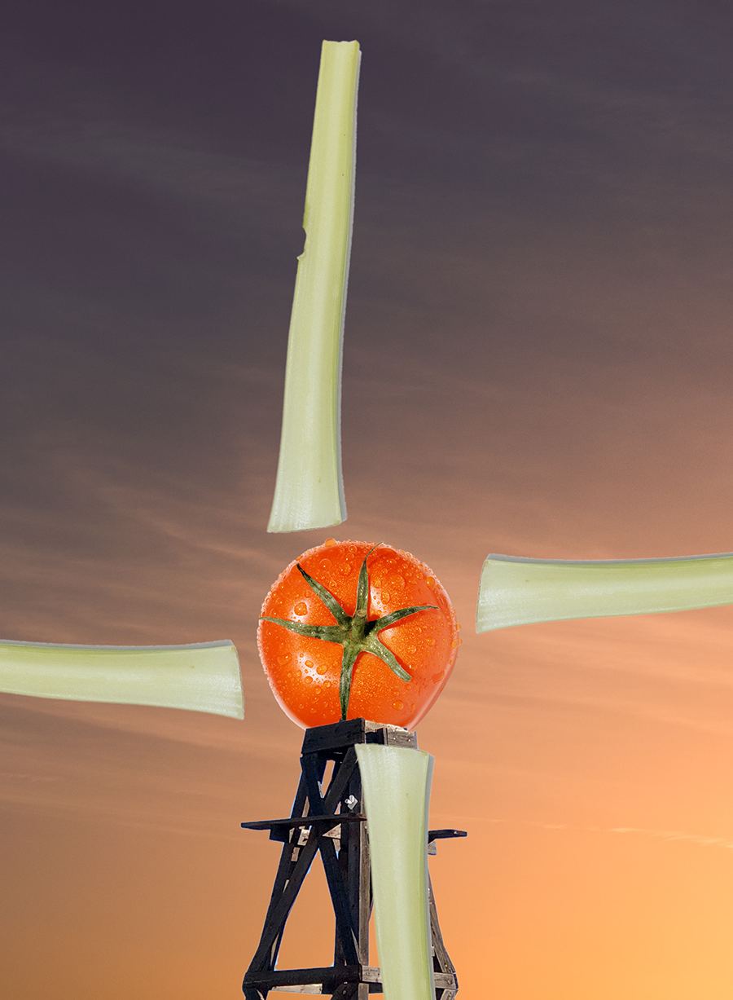The revised sketches would be translated from pencil and paper to early mockups via Photoshop. The windmill mockup served as as replacement for an earlier sketch involving a bridge.
Almost There
 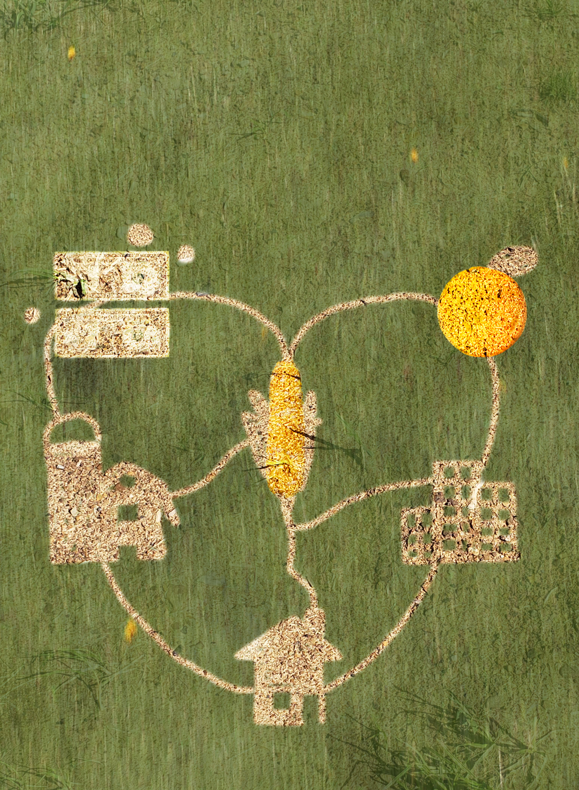
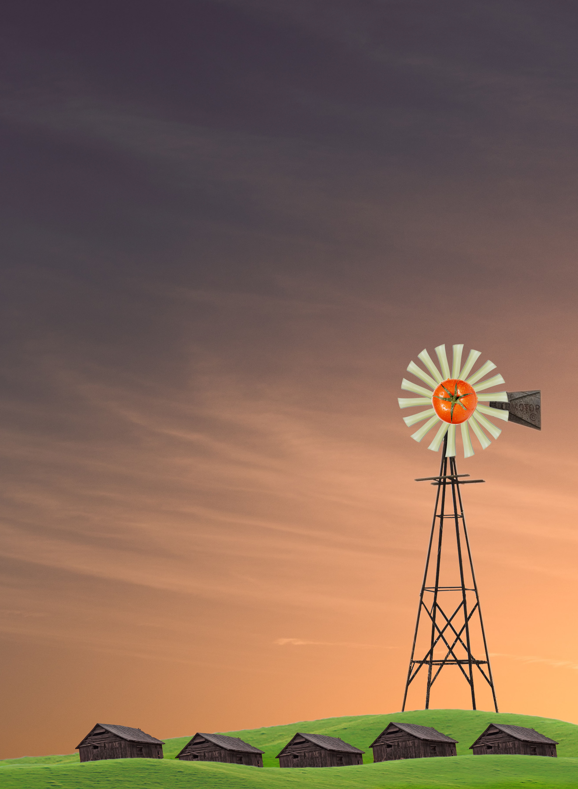
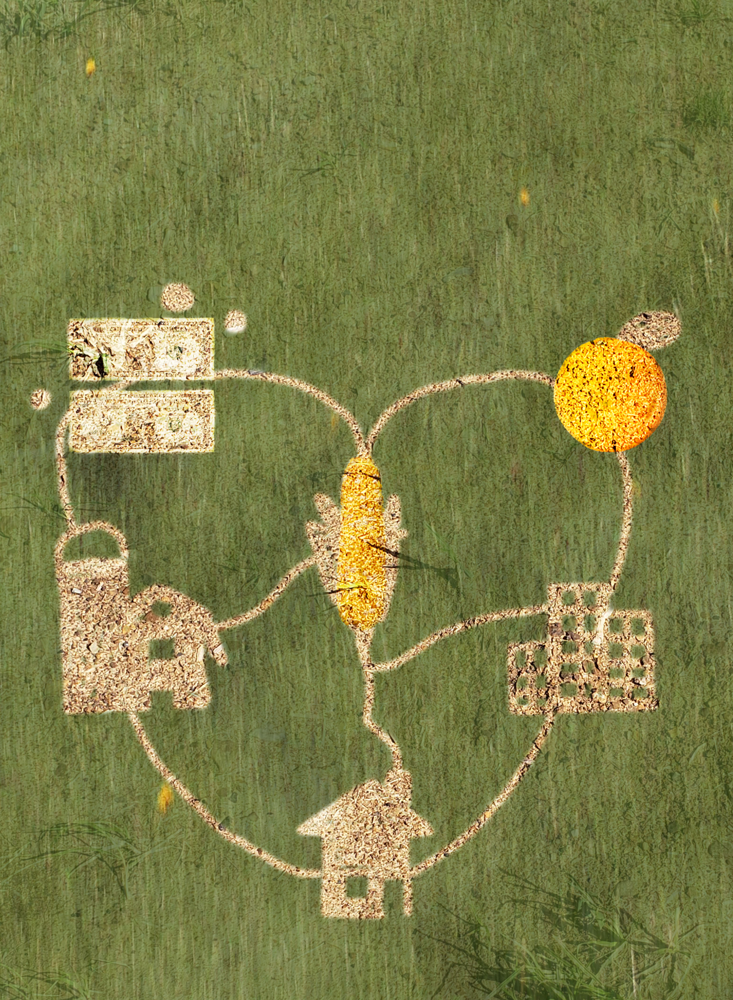
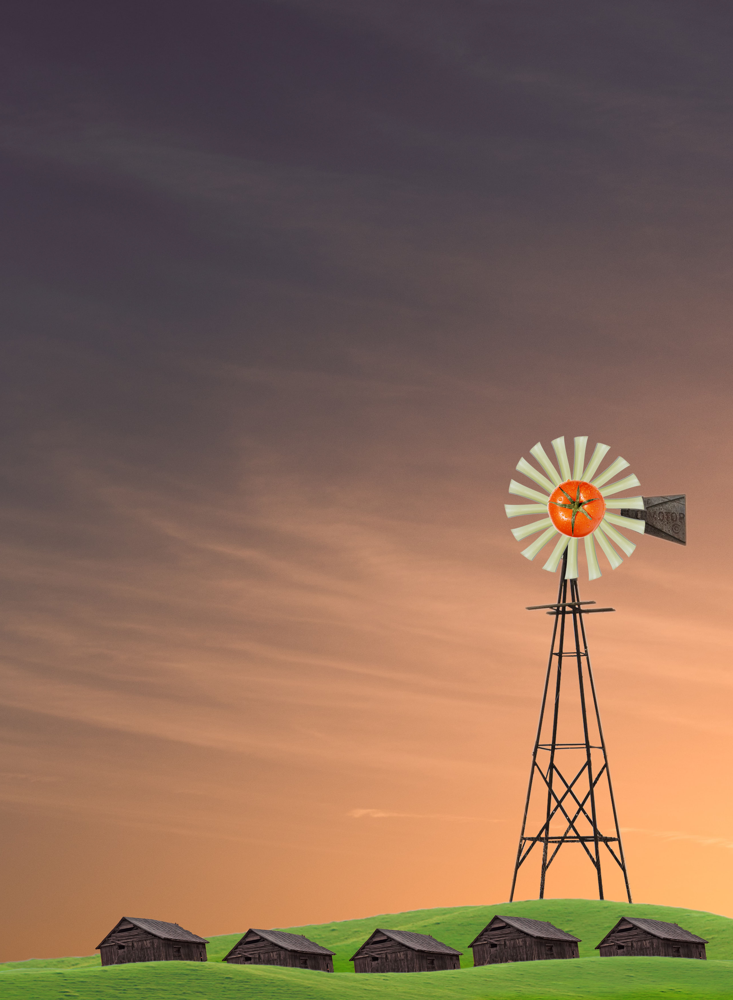
After another round of review, the mockups were given several touchups to really bring the idea home. Following the updates made, I decided to combine the "arrow apple" and "farm map" concepts into one.
The Finish Line
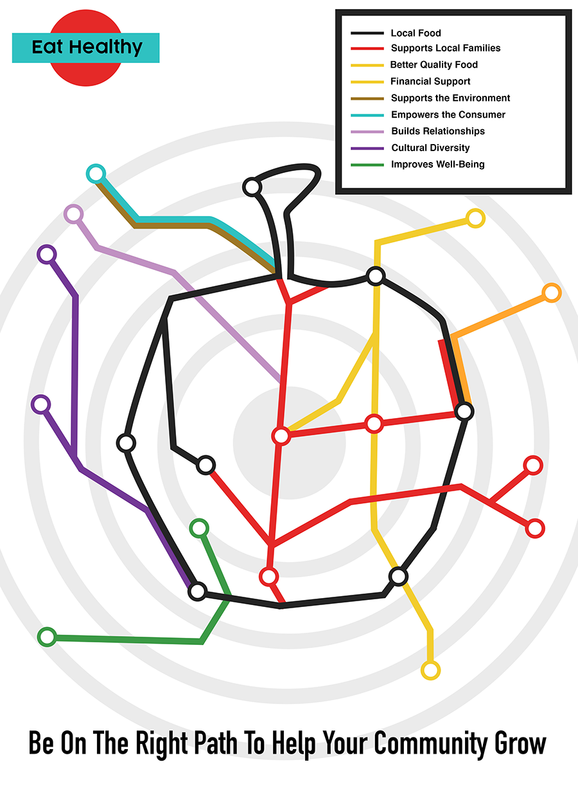 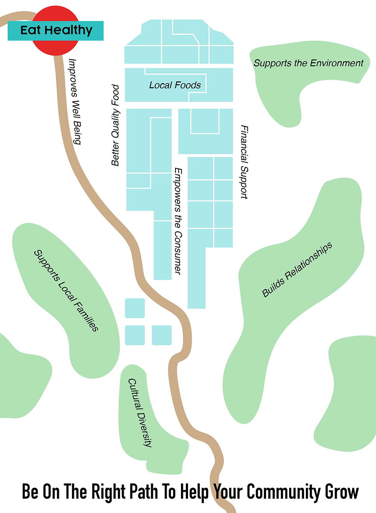 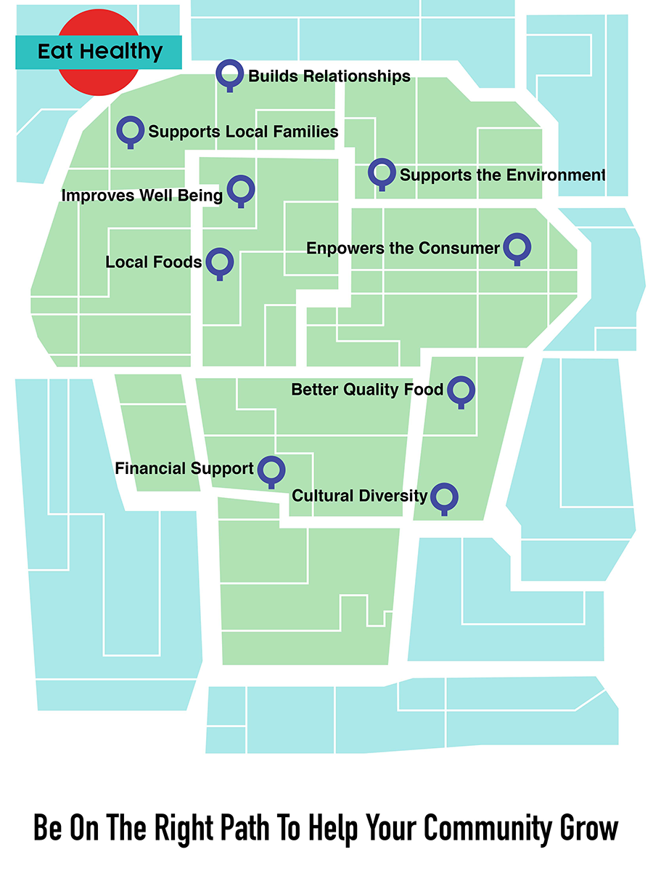For the final campaign, I chose the apple/map concept, tweaking the other mockups to match it. The concept was also modified to more resemble maps compared to the original mockup.